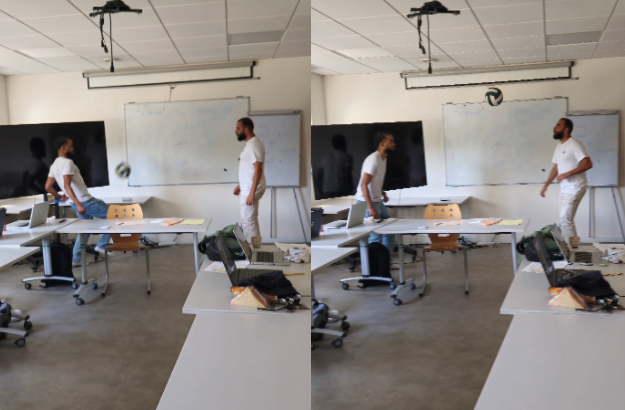

Find interviews here
All interviews are the same as when they were given to us.
Interview Abdellah and Ziyad
So, you are Abdel & Ziad, and you are footballers !
Since how many years do you are interested in football ?
Abdellah’s Answer : It’s from my childhood, I started to see the older in my neighborhood play football. I see them and I just loved so I tried, first in the street, after in a club. So, I stared at 10 years old.
Ziyad’s Answer : For me it’s just like Abdellah, I’m stared to play in the street, so I was playing with my friend or my brothers when I was maybe 8 years old. I played in a football club when I was 11.
Ok so you are 25 & 20 years old ! This passion began early in your life !
Did you have idols in this sport when you were little ?
Abdellah’s Answer : When I was little, I loved you know the show in football, so I liked players like Ronaldinho & Christiano Ronaldo. It was just for the show, now I prefer middle fielder who create the game.
Ziyad’s Answer : When I was young, I liked players like Ronaldo or Neymar for the content they proposed.
Nice, famous one ! Is it always the same idols or does it change for now ?
Abdellah’s Answer : My idols changed because like I said first It was for the show, you know like Ronaldinho did a lot of strikes for It was for that. Now I prefer middle header because without them you can’t win, so for now I prefer players like Kroose or Inesta but yeah now I’m gonna to say players like Modric
Ziyad ’s Answer : I don’t watch anymore football like before, but my favorite player now it’s Lionel Messi. For me it’s the best player.
Perfect !
How did you become so good at this sport ? Were you coached by somebody ?
Abdellah’s Answer : I don’t know if I’m good but I’m gonna to say I’m “bon” ! But first of all, I was bad, very bad, I started in the last team in the club. I’m remember that the first years in watched a lot of YouTube videos and try to do the same things that I saw all days I started to jungle and after to shoot you know when you play in the street you play a lot and after month you just be better. With time of training, you learned a lot. Also, I was coached by an older in my neighborhood, his name is Thomas. He trained me a lot and gave me advice.
Ziyad ’s Answer : For me I became better, because I’m not the best player but I think I became better with myself or with coach like Abdellah or friends. Also, a thing that help me a lot is to play hard but with no competition, with no pression, like practice with friends after school.
Can you show me some tricks ?

Ok thanks a lot for your time ! How do you fell the show, are you ready for it ?
Common’s Answer : We are not ready yet but we gonna train and yeah, no pression !
Nice to hear that ! I can't wait to see you on stage! Good Luck !
Interview Stéphane and Felix
What are you going to do today?
Stephan : We are going to play some music !
Felix : YEAH ! We came from very far to play our song !
Okay, but, what are you going to play?
Felix: We meet in a bar after 5 bottle of Whisky. I still don’t even know his name!
Stephan : Yeah man, it was in Texas in USA you know ?
So you not going to answer my question right ?
Stephan : Magalie was cute for sure! But I think I still prefer Karen.
Felix : Are you serious bro? Magalie is the most beautiful for sure.
Alright, I think I'll just wish you good luck with your show.
Stephan : Oh ? The interview is already end ?
Felix : Okay thank’s dude ! Have a good day too, and don’t forget to drink your daily beer !
Interview Gabin
What is your role on stage?
Gabin: I’m an MC, so I’m hosting the event and I present all the talent in my group.
Which type of MC are you?
Gabin: I'm just going to create a great atmosphere for the whole audience. I hope everyone will love the talents and the show!
Okay! You look on fire for the show!
Gabin: Yes sir, I am! Can’t wait to get on it!
Perfect! Thanks for your time, have a good show!
Interview Amélie
Hi Amélie, the photographer of the show ! How old are you and since how many years do you are passion by photography ?
Amélie’s answer : It started in my life at 10 years old, now I am 32. It has been my passion for 22 years already! I have been practicing it professionally for 7 years.
Oh, waw, you’re an O.G. ! But it’s an expensive hobby, how much your think is your collection ?
Amélie’s answer : My current collection must be valued at 3,500€ ! I spent quite a bit of time on it.
Okey that a lot ! 2 French SMIC…
So, for this event, how many persons you have photographed ?
Amélie’s answer : I photographed ~10 people and took ~60 photos! It took me a whole morning! I'm so happy to be able to show this at the event!
Yes I can't wait to see that !